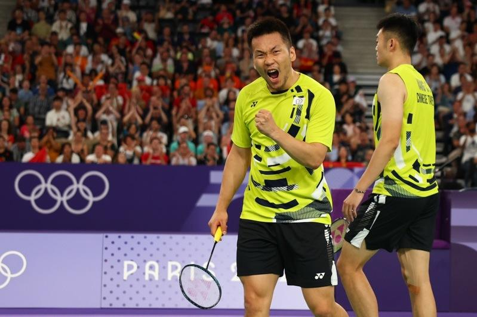

中华队羽球黄金男双「麟洋配」成员之一的李洋，早已宣布巴黎奥运将是生涯奥运「最后一舞」，28岁的他其实两年前就获聘成国立体育大学专任副教授，借调时间点就是巴黎奥运后，预计新学期就会开设羽球专长训练，成为国体大首位奥运双金副教授。
国体大校长邱炳坤表示，东京奥运结束后不久，国体教授纪世清退休，刚好有职务空缺，对外征才后收到不少投件，校方也有探询李洋想法，最终经过三级教评会，聘请他成为国体副教授。李洋公假请到巴黎奥运结束，预计新学期就会开设羽球专长训练课，
李洋是2022年10月1日报到，当时刚过27岁生日不久，成国体最年轻副教授。选择投入教职也让李洋离开土地银行，消息一出一度让他背上「背骨仔」骂名，但同年11月国体就和土银签订「羽球运动卓越发展合作备忘录」，通过产、官、学的跨领域人才资源，共同发展科学化训练和选手育才辅导，李洋当时也亲自现身记者会。
邱炳坤提到，李洋已经是国体专任副教授将近2年，进入国体时认为还可以打一届奥运，学校完全支持，通过相关程序完成公假、借调国训中心训练备战，如今完成巴黎奥运连霸，学校老师群组都向李洋道贺，与有荣焉。
曾是1988年汉城奥运国手的邱炳坤提到，运动员不可能每年都是高峰，总会有转换身份的时候，李洋完成巴黎奥运连霸后会不会改变退役想法、是否打年终赛，都会尊重，「所以未来要不要继续打、打到什么时候，回来再和他讨论。」